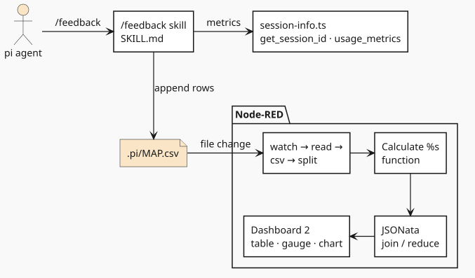

- Role
- Author
- When
- Jun 2026
- Stack
- Node-RED, Dashboard 2, JSONata, a pi-agent skill and TypeScript extension
- Links
- Repository
What it is
The /feedback skill has the agent review its own session, sort the friction into three kinds (context fragmentation, brittle state, missing guardrails) and append rows to .pi/MAP.csv. Node-RED watches the file, splits the session's tokens and cost by effort, and shows a table, an input/output token gauge and effort per module.

Design decisions
- A CSV file as the database. The agent only appends rows; Node-RED is a file watcher, a CSV parser and a few JSONata reductions.
- Output the machine can read. The skill allows only raw rows with 12 fixed columns, effort that sums to exactly 100, and scope as a module name, never a path.
- Numbers from tools, not from the model. Token counts come from an extension, and the timestamp is read out of the session's UUIDv7.
Code overview
The agent writes a file; Node-RED reads it. Nothing else talks to anything:

diagrams/ai-metrics.puml).The /feedback skill
The rules that keep the agent's output machine-readable:
1. **Zero Conversational Text**
Do not output any markdown headers, introductory text, greetings, or
conclusions. Output *only* raw CSV rows.
2. **Scope column**
Replace all file/directory references with a single capitalized module name
— the business domain or logical module that best captures the affected
area. Never use file paths, globs, or comma-separated lists.
Optionally append a parenthetical sub-scope for granularity, used sparingly:
`Checkout(tests)` when the friction is specifically about test code,
`Checkout(db)` when it's about schema/migrations, etc.
- GOOD: `Checkout`, `Checkout(tests)`, `Checkout(db)`
- BAD: `checkout/`, `controllers/checkout/checkout.go`, `api_checkout_*_test.go`
3. **Apportioning Logic**
Subjectively divide the cognitive effort spent across the session into
relative integers representing percentages (e.g., 70, 30). The sum of the
`Effort_Percentage` column across all rows generated for a single feedback
loop **must equal exactly 100**.The extension
Token and cost numbers come from a tool, not from the model's memory.
pi.registerTool({
name: "usage_metrics",
label: "Usage Metrics",
description:
"Returns aggregated token usage, cost, context utilization, and current model — the same metrics shown in the pi UI footer.",
promptSnippet: "Return aggregated usage metrics for the current session",
promptGuidelines: [
"Use usage_metrics when the user asks about token usage, cost, context usage, or session statistics.",
],
parameters: Type.Object({}),
async execute(_toolCallId, _params, _signal, _onUpdate, ctx) {
const metrics = buildMetrics(pi, ctx);
return {
content: [{ type: "text", text: JSON.stringify(metrics, null, 2) }],
details: metrics,
};
},
});MAP.csv
Twelve pipe-separated columns, one row per kind of friction:
session_id | friction_category | scope | effort_pct | diagnosis | tokens_in | tokens_out | tokens_total | cost_total | model_provider | model_id | timestampSplitting the cost
A function node gives each row its share of the session's tokens and cost.
let data = msg.payload;
let p = data.effort_pct / 100;
function key_pct(k, places) {
data[k] = (data[k] * p).toFixed(places);
}
key_pct("tokens_in", 0);
key_pct("tokens_out", 0);
key_pct("tokens_total", 0);
key_pct("cost_total", 5);
msg.payload = data;
return msg;Aggregating
JSONata reductions: the average input/output ratio for the gauge, and effort per module for the chart.
$A + ($number(payload.tokens_in) / $number(payload.tokens_out))(
$scope := payload.scope;
$match := $lookup($A, $scope);
$effort := $number(payload.effort_pct);
$merge([
$A,
{ $scope: $exists($match) ?
{ "t": $match.t + $effort, "c": $match.c + 1 } :
{ "t": $effort, "c": 1 }
}
]) )History
- 5 Jun 2026Project created.
- 6 Jun 2026Bare-bones metrics and the input/output gauge.
- 7 Jun 2026Effort per scope chart; the MAP.csv skill and extension.